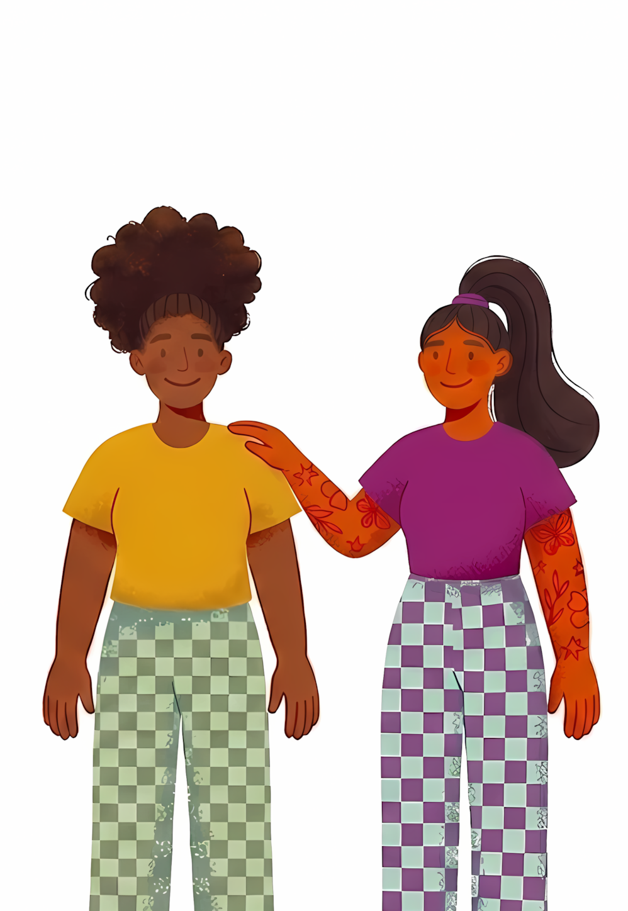
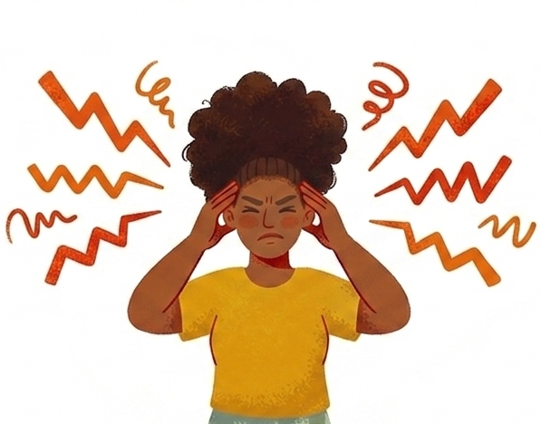
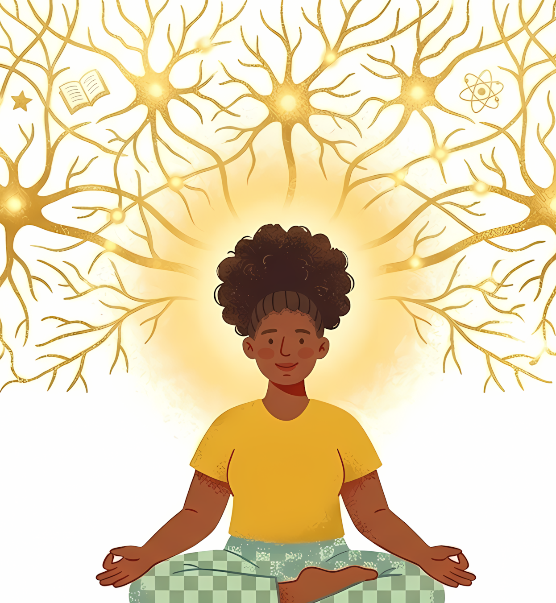

Восстановите контроль над своим вниманием и улучшите память с помощью коротких системных тренировок. Станьте эффективнее в работе и жизни. Научный подход к развитию когнитивных навыков, разработанный для специалистов, работающих в условиях высокой информационной перегрузки

Наш мозг сформировался в условиях дефицита данных, но сегодня он вынужден выживать в океане бесконечной информации. Мы сталкиваемся с вызовами, к которым наша когнитивная система не была адаптирована эволюционно
Бесконечный поток уведомлений и новостей разрывает внимание на части
Любая информация доступна в один клик, и мозг перестает её надежно запоминать

Современный человек потребляет данных больше, чем разум способен эффективно обработать. Это приводит к когнитивной усталости и ощущению «тумана» в голове в конце рабочего дня
Мы предлагаем системный подход к тренировке Ваших когнитивных навыков, превращая скучную теорию нейропсихологии в доступный инструмент
В основе системы лежат принципы доказательной нейропсихологии и алгоритмы интервальных повторений. Мы перевели сложные когнитивные методики в формат быстрых и эффективных сессий, которые приносят реальную пользу в работе и обучении
Просмотр короткого ролика погрузит Вас в контекст и подготовит к выполнению заданий
Выполнение коротких упражнений на проверку памяти, внимания и скорости мышления выявит Ваши точки роста
Система рассчитает Ваши показатели и сформирует когнитивный профиль
Вы узнаете какие когнитивные навыки требуют тренировки и получите индивидуальный график занятий
Сразу после вводного тестирования Вы сможете перейти к тренировкам, чтобы улучшить свои когнитивные навыки
Мы создали экосистему, которая не просто тренирует когнитивные навыки, но и меняет качество Вашей жизни в цифровой среде
Вам не нужно помнить, что и когда повторить — алгоритм сам предложит закрепить материал именно в тот момент, когда это нужно для Вашей памяти
В отличие от игровых сервисов, наши упражнения развивают навыки, которые Вы сразу начнете использовать в работе и обучении
Система постоянно анализирует Ваш прогресс и корректирует сложность, чтобы Вы развивались макисмально эффективно и без переутомления
Мы выходим за рамки тренировок, предлагая научно обоснованные советы по сну и режиму дня для поддержания высокого уровня энергии
Перейдите от хаотичного потребления информации к осознанному управлению своими когнитивными ресурсами

Информация перестанет «вылетать из головы». Благодаря интервальным повторениям важные данные сохранятся в долговременной памяти
Вы сможете удерживать фокус на сложных профессиональных задачах дольше, не отвлекаясь на внешние уведомления и цифровой шум
Вы избавитесь от ощущения «тумана в голове» к концу рабочего дня и сможете быстрее принимать решения в условиях информационной перегрузки
Понимание того, что вся важная информация под контролем и мозг работает эффективно, снизит уровень тревожности от бесконечного потока дел
Результаты наших пользователей — это не только высокие баллы в тестах, но и реальное повышение эффективности в повседневной деятельности
Присоединяйтесь к сообществу профессионалов, которые выбирают научный подход к развитию мозга. Пройдите вводное тестирование, получите свой когнитивный профиль и начните тренировки, адаптированные под Ваши цели